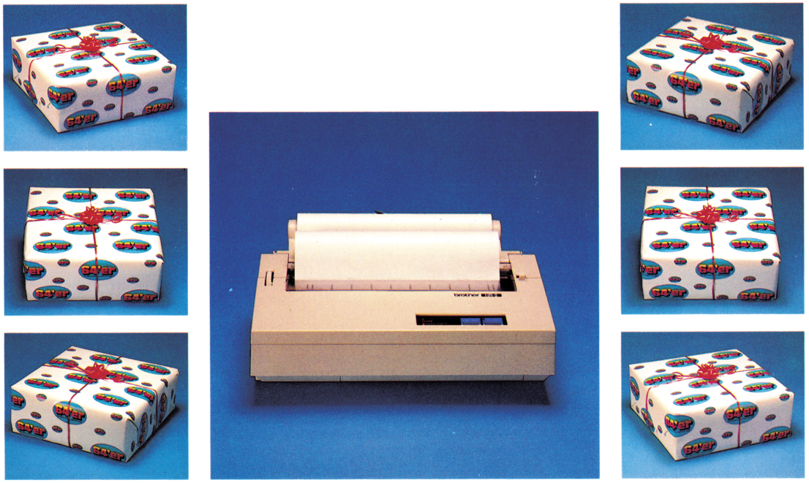
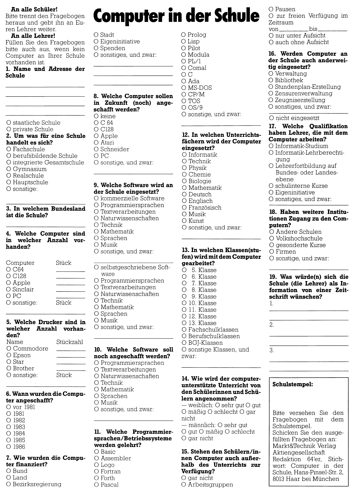

20 Drucker für die Schule
Den Schulen steht im allgemeinen nicht viel Geld zu Verfügung. Doch die heutige Jugend sollte frühzeitig an die Computer-Technologie herangeführt werden. Darum gibt es in einer einmaligen Aktion für 20 Schulen je einen Drucker zu gewinnen.


Was müssen Sie dazu tun? Den Fragebogen auf der Rückseite brauchen Sie nur einer Schule zur Verfügung stellen. Dort muß ein Lehrer den Fragebogen ausfüllen, mit dem Schulstempel versehen und an uns zurückschicken. Unsere Adresse finden Sie auf der Rückseite. Unter den Einsendungen werden wir 20 Drucker des Typs »Brother HP-5 T'TP« verlosen.
Die Brother International GmbH übergab in einer Spendenaktion 200 dieser Drucker an den Verein »Schule braucht Computer eV.«. 20 dieser Geräte wurden uns für die Fragebogenaktion zu Verfügung gestellt.
Zahlreiche Persönlichkeiten aus Wirtschaft, Wissenschaft und Politik haben sich 1985 zu dem überparteilichen, gemeinnützigen Verein »Schule braucht Computer e.V.« zusammengeschlossen. Der Verein ist selbstlos tätig und verfolgt keine eigenwirtschaftlichen Zwecke. Mit Hilfe von Spenden aus der freien Wirtschaft willder Verein Schulen besser mit Computern versorgen.
Das Ziel des Vereins ist, vor allem die heutige Jugend von der zukünftigen Bedeutung der Mikroelektronik zu überzeugen und sie an diese neue Technologie frühzeitig heranzuführen. Frau Regina Senft, die Bundesvorsitzende des Vereins, vertritt dazu folgende Meinung:
»Die Bundesrepublik als rohstoffarmes Land bleibt international nur dann wettbewerbsfähig, wenn unsere Jugendlichen in den Schulen und Betrieben frühzeitig den Umgang mit dem Computer erlernen. Eine zukunftsorientierte Ausbildung ist heute ohne Computerkenntnisse nicht denkbar. Nach Schätzungen von Experten werden bereits 1990 über 70 Prozent aller Beschäftigten mit Terminals umgehen müssen. Eine praxisnahe Ausbildung mit modernen Technologien ist daher die Existenzsicherung von morgen.«
Was tut der Verein, um dies zu erreichen? Die Aktion »Schule braucht Computer« sucht Sponsoren aus der freien Wirtschaft, die dabei helfen, Schulen und Ausbildungsstätten mit Computern zu versorgen. Dabei werden den Schulen kostenlos — ohne jegliche Auflagen — mit Genehmigung der jeweiligen Schulbehörde Computer zur Verfügung gestellt. Finanziert wird dies durch ein System von Mietpatenschaften (Patenbetriebe spenden dabei monatlich einen bestimmten Betrag) oder durch gesponserte Computer verschiedener Hersteller. Versuchsmodelle dieser Art haben bereits funktioniert. In München wurden so schon einige Schulen mit Computern ausgestattet.
Der Verein hofft, mit vielen Unternehmen der Computerbranche, gleiche oder ähnliche Modellformen zu finden. Alle Schulen, die von der »öffentlichen Hand« außer guten Ratschlägen nichts erhalten, sollten sich bei der nachstehenden Adresse melden.
Wenden Sie sich bitte an die Aktion »Schule braucht Computer« eV., Rheinallee 6, 5300 Bonn, Telefon (0228) 361011, Telex 889813.
(kn)